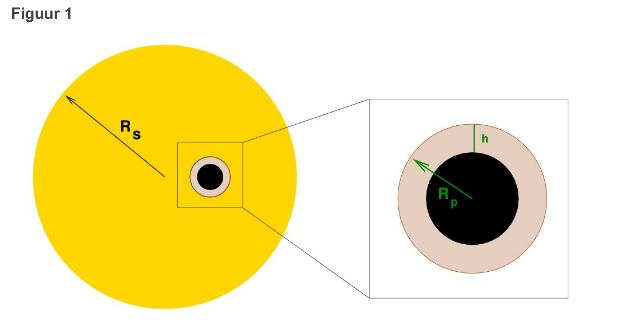
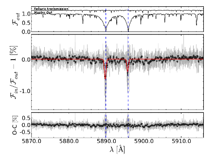

4. De atmosfeer van een exoplaneet#
expertgroep natuurkunde
4.1 Voorkennis: fluxdichtheid, magnitude en fotonen#
Van oudsher werden sterren geklassificeerd op basis van hun helderheid aan de hemel. De Griekse astronoom Hipparchus stelde als eerste een verdeling in magnitude op, waarbij de helderste sterren magnitude 1 hadden en de zwakste sterren magnitude 6.
Tegenwoordig weten we dat de helderheid van een ster gerelateerd is aan de intensiteit of fluxdichtheid van het licht dat we van de ster ontvangen. De fluxdichtheid is het vermogen per oppervlakte-eenheid per eenheid golflengte en wordt gegeven in de eenheid \(W m^{–2} nm^{–1}\) . De relatie tussen magnitude \(m\) en fluxdichtheid \(F\) is:
Hierin is \(F_0\) een referentiefluxdichtheid, ten opzichte waarvan de fluxdichtheid wordt omgezet in een magnitude. \(F_0\) is dus een vastgelegd nulpunt voor de magnitudeschaal.
Opdracht 1#
Toon aan dat voor het verschil tussen de magnitudes \(m_1\) en \(m_2\) van twee sterren geldt:
Opdracht 2#
Ster A heeft een twee keer zo grote fluxdichtheid als ster B. Ster A heeft een magnitude van 3,4. Bereken de magnitude van ster B.
Meestal wordt in de sterrenkunde gewerkt met de fluxdichtheid in een bepaald golflengtegebied. Met behulp van een filter wordt van het invallende licht een gedeelte van het spectrum geselecteerd, rond een centrale golflengte. Het nulpunt voor de magnitudeschaal wordt per golflengtegebied vastgelegd. Zo kan bijvoorbeeld de magnitude van de ster Vega in alle golflengtegebieden op 0 gesteld worden. Dat betekent dat de fluxdichtheid van Vega als referentie dient voor alle andere metingen.
Een veel gebruikte verdeling in golflengtegebieden is het UBVRI-systeem, zie tabel 1.
Tabel 1#
Filter |
Centrale golflengte \(\lambda\) (nm) |
Bandbreedte \(\Delta\lambda\) (nm) |
Referentiefluxdichtheid \(F_0\) (W m\(^{-2}\) nm\(^{-1}\)) |
Fotonenstroom \(N\) (fotonen s\(^{-1}\) m\(^{-2}\)) |
|---|---|---|---|---|
U |
\(360\) |
\(50\) |
\(4{,}19 \cdot 10^{-11}\) |
\(3{,}8 \cdot 10^{9}\) |
B |
\(430\) |
\(72\) |
\(6{,}91 \cdot 10^{-11}\) |
\(1{,}1 \cdot 10^{10}\) |
V |
\(550\) |
\(86\) |
\(3{,}61 \cdot 10^{-11}\) |
\(8{,}6 \cdot 10^{9}\) |
R |
\(650\) |
\(133\) |
\(2{,}19 \cdot 10^{-11}\) |
\(9{,}5 \cdot 10^{9}\) |
I |
\(820\) |
\(140\) |
\(1{,}14 \cdot 10^{-11}\) |
\(6{,}6 \cdot 10^{9}\) |
Opdracht 3#
Controleer met een berekening de waarde van de fotonenstroom in het zichtbare gebied, zoals die in bovenstaande tabel is gegeven. Leid eerst met behulp van eenheden een formule af voor de fotonenstroom \(N\).
Opdracht 4#
De ster HD189733 heeft een visuele magnitude van 7,6. De ster wordt bestudeerd met een telescoop met een diameter van 3,60 \(m\).
Bereken het aantal fotonen in het zichtbare gebied dat per seconde door deze telescoop wordt waargenomen.
4.2 Transmissiespectroscopie#
Om te onderzoeken welke stoffen in de atmosfeer van een planeet aanwezig zijn, kan gebruik gemaakt worden van transmissiespectroscopie. Doordat licht van specifieke golflengtes goed geabsorbeerd wordt door een bepaalde stof in de atmosfeer, ontstaan er absorptielijnen in het spectrum van het licht dat door de atmosfeer is gegaan. Deze golflengtes komen overeen met overgangen in het (discrete) energieniveau van het atoom of molecuul en vormen dus een uniek patroon voor elke stof.
Als de planeet voor de ster langs beweegt, gaat een deel van het sterlicht door de atmosfeer van de planeet. Een planeet is echter veel kleiner dan een ster, zodat maar een zeer klein deel van het sterlicht door de atmosfeer van de planeet gaat. De situatie is schematisch weergegeven in figuur 1. Hierin beweegt een planeet met straal \(R_p\), die een atmosfeer heeft met hoogte \(h\), voor een ster met straal \(R_s\) langs.

Opdracht 5#
Stel een vergelijking op voor de fractie van het licht van de ster dat door de atmosfeer van de planeet gaat. Hierbij mag je aannemen dat \(h << R_p\).
Opdracht 6#
Stel dat een astronoom op een andere planeet de atmosfeer van onze Aarde bestudeert, terwijl de Aarde voor de Zon langs beweegt.
Welke fractie van het zonlicht gaat dan door de aardatmosfeer? Ga uit van een atmosfeerdikte van 100 \(km\).
Wyttenbach et al. (2015) beschrijven een analyse van het spectrum van de exoplaneet HD189733b. Gedurende drie nachten observeerden zij de passage van deze planeet voor zijn ster langs en legden zij het spectrum van het sterlicht tijdens de passage vast. Elke passage duurde een paar uur. Vlak voor en na de passage werd ook het spectrum van de onbedekte ster gemeten. In het spectrum van HD189733b zijn duidelijk twee natriumlijnen te zien: D1 (589,0 \(nm\)) en D2 (589,6 \(nm\)).
Om de natriumlijnen te kunnen zien, moet een signaal met een relatieve sterkte van \( 10^{-4} \) te onderscheiden zijn van de ruis (dat wil zeggen: de statistische fluctuatie in de gemeten fluxdichtheid per golflengte). 
Voor getelde aantallen in een bepaald tijdinterval (fotonen, deeltjesvervallen, fietsongelukken, …) geldt de zogeheten Poissonstatistiek. Als in een bepaald tijdinterval n fotonen geteld worden, is de statistische onzekerheid in dit aantal gelijk aan:
De relatieve onzekerheid is dus:
Opdracht 8#
Hoeveel fotonen moeten er gemeten worden om de natriumlijnen van HD189733b te kunnen onderscheiden van de ruis? Pak de piek bij 589 \(nm\) en neem een breedte van (= breedte lijn). Gebruik de berekende fluxdichtheid van opdracht 4.
Hoe lang moet er gemeten worden om dit niveau te bereiken?
Waarom hadden de onderzoekers drie nachten observatietijd nodig?